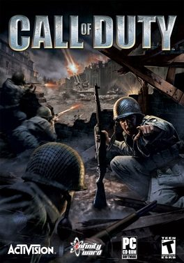

Call of Duty (PC)



(Activision)
Many of the recent games based on WWII mythology have “inspirational” titles that push the emotional buttons with wild abandon: cases in point being Medal of Honour, Men of Valour and, erm… Return to Castle Wolfenstein. 2001’s Medal of Honour: Allied Assault was a huge success, and hailed by many as one of the year’s best games. Twenty-two of the game’s original designers left to form Infinity Ward, and Call of Duty is the studio’s first game to mine the battlefields of the Second World War for inspiration. But surprisingly enough, Call of Duty is even better than Allied Assault. A lot better in fact. Allowing you to play a part in some of the most significant battles of WWII, the boys at Infinity Ward have used their considerable expertise to deliver a game far better than anyone expected.
When it comes to the general tone and mood of Call of Duty, the similarities to Allied Assault are impossible to deny. But while it may not exactly break any new ground, this is far from a criticism as Call of Duty manages to effortlessly improve on what has come before in almost every way. Without a doubt one of the most finely crafted and balanced shooters that we’ve seen in a long time, the intensity of action found in Call of Duty remains gripping and immersive from beginning to end. The game’s strength is that it manages to create the illusion of a whole war going on around you as you play: explosions light up the sky, bombs thunder in the distance, and the gunfire is so loud that it’s often deafening. The whole experience sets new standards in immersion for videogames, and these are just some of the factors that make the battlefield in Call of Duty truly come alive.
Like its predecessor Half Life, Call of Duty never breaks the tension by moving to a cut-scene; instead, you are always part of the action. Often so fast and furious that it’s difficult to keep a grip on what’s going on, if you rush in with guns blazing then you’ll quickly be dead. Full stop. Call of Duty forces you to play smart, and a number of features have been implemented to give the player a fighting chance in the face of all the mayhem. You can both crouch and crawl to remove yourself from the line of fire, lean out from behind walls to take shots at your opponents, and a quick tap of the right mouse button will pull the scope of the gun up against your eye. And while a small number of missions recall the lone-commando feel of Allied Assault, Call of Duty has a much stronger focus on teamwork. Your squadron members are able to act independently with fantastic AI, and your enemies intelligently duck, weave and take cover from the line of your fire. The teamwork aspects add immeasurably to the experience; having said that, the battles unfold in such a dynamic and unpredictable way, you never know who is going to make it through to the end of the level.
With a never-ending run of tense, beautifully scripted situations, every single one of the different missions found in Call of Duty offers another totally convincing scenario. Moving smoothly between defensive manoeuvres and run-and-gun action, the missions feature everything from a slow crawl through a desolate war-torn city to a daring midnight raid on a POW camp, as well as several high-octane car chases that make for some of the most exiting on-rails experiences ever. Sometimes the intensity is taken to almost ridiculous levels, such as when you invade a German airport on the back of a truck while pursued by a multitude of soldiers, only to be forced to hold back a series of aircraft as they bomb you from above.
In a truly novel addition, Call of Duty for once has a perspective to offer on the war other than that of the Americans. While the US missions have you performing as part of a squadron, the British segment sees you conducting a number of stealthy reconnaissance missions with a small group of elite operatives. The heists pulled off by the British are incredibly cheeky and over-the-top, and you can’t help but be gob-smacked when they attempt to invade a German naval ship armed only with a Nazi disguise. But the Russian missions are truly a sight to behold; one recreation of a scene from Enemy at the Gates sees you storm the beaches of Stalingrad without even a gun to defend yourself, rewarded with a bullet in the head if you decide to retreat. Your comrades fighting alongside you look genuinely scared at what they’re going up against, and for good reason; the battle makes you realise the truly absurd nature of the conflicts that the Russians fought in.
Based on the tech that was used in last year’s Return to Castle Wolfenstein (itself a heavily modified extension of ID’s Quake III engine), the developers have done an extraordinary job of working with the technology provided. Featuring advanced lighting effects, stunning skeletal animation for the soldiers, crisp texturing, and the ability to render both detailed interiors and sprawling outdoor areas, the Call of Duty engine is a brilliant piece of technology. Looking basically as good as the Quake III engine is ever going to get, the game even runs smoothly on low-end systems, automatically configuring the graphic settings so that it runs smoothly on your computer.
Call of Duty more than manages to compete with the Medal of Honour franchise – it betters it. Never has a WWII game had such a diverse and beautifully balanced collection of missions on offer, and the developer's attention to detail makes the experience seem authentic every step of the way. While Call of Duty comes recommended for pretty much everyone, it’s an absolute essential purchase for those who have a flavour for WWII style shooters. Because for the moment at least, Call of Duty is the best WWII shooter out there.
Rating: 4.5 out of 5